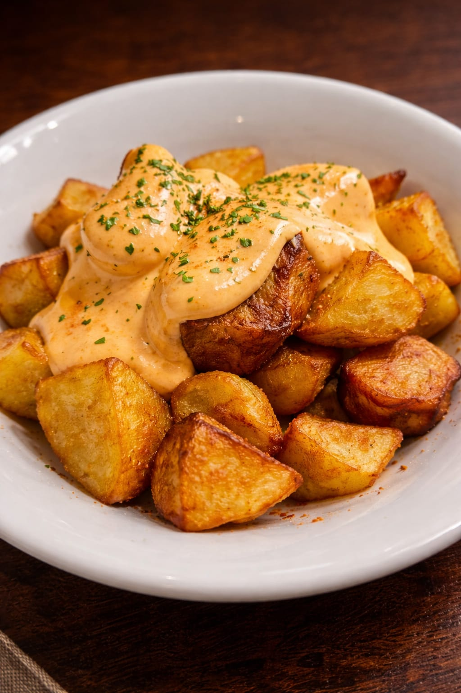
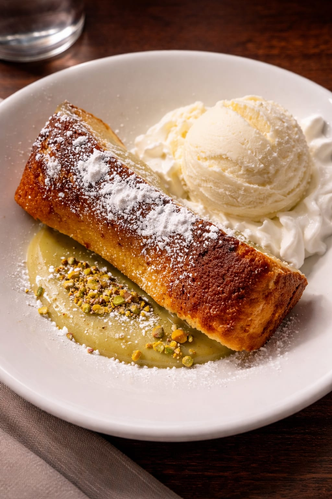
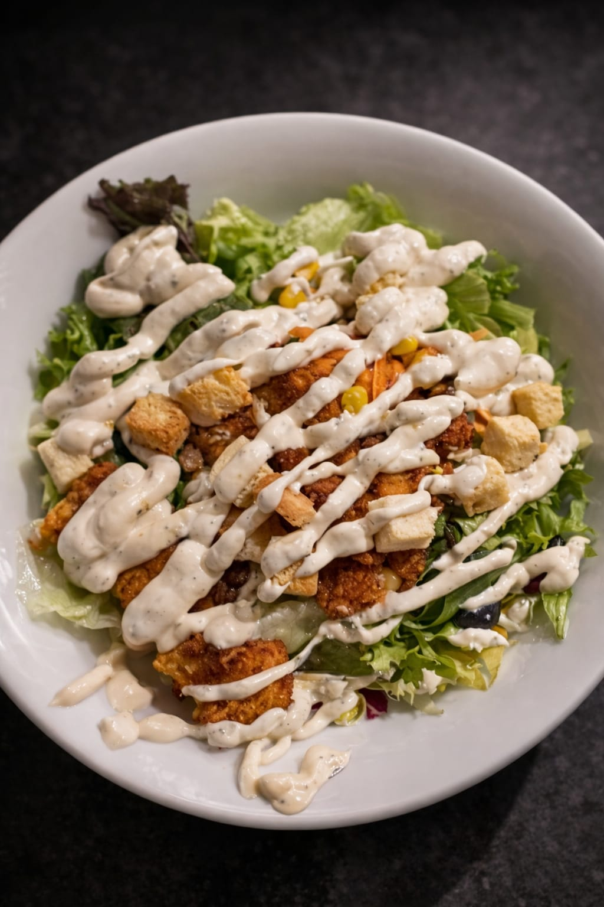

Menú del día
Una propuesta completa y cuidada para comer bien entre semana.
Ver menú del díaRestaurante en el centro de Pamplona · Producto local y de temporada
Disfruta de cocina navarra tradicional, menús cuidados y producto de temporada en un espacio cálido junto a San Nicolás.
Dos menús bien definidos y una carta de cocina navarra para elegir con claridad.
Una propuesta completa y cuidada para comer bien entre semana.
Ver menú del díaUna experiencia más pausada para compartir y disfrutar la sobremesa.
Ver menú de fin de semanaPlatos tradicionales, raciones y propuestas de temporada para compartir.
Abrir cartaConsulta el menú del día y nuestra propuesta de fin de semana.
Un rincón cálido y elegante para comer, brindar y alargar la sobremesa.





Reserva por teléfono en un clic.
Opiniones reales de clientes.
“Muy buena comida, menu navarro de siempre con un precio de 22€ y la atencion de las camareras espectacular. Muy recomendable si vienes a Pamplona.”
“El mejor rabo de toro que probé en mucho tiempo, las alubias impresionantes. El risotto y las manitas no estaban mal, pero no destacaban como las otras dos cosas 100% recomendable”
“Experiencia fabulosa. Buenísima comida y trato por parte de las camareras. Calidad -precio, genial. Volvemos seguro.”
Estamos en pleno centro histórico de Pamplona. Reserva tu mesa por teléfono.
☎️ 948 59 80 74
📍 Rincón de San Nicolás 1, Pamplona (31001)
* Horario sujeto a cambios en festivos y eventos.